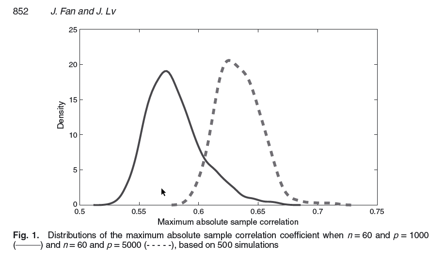

3 Ordering the variables
3.1 Introduction
In high dimensional settings, for causal models, the available set of potential predictors can be very large and an exhaustive building of potential models (to be compared in terms of model validity) is practically impossible. One hence needs to find suitable methods for reducing the model size (number of predictors) by either:
(a) ordering the predictors that enter the model sequentially, to constitute, at most, \(p\) potential models to be assessed and compared,
(b) averaging groups of predictors.
For (a), the ordering consists in a sequence of steps in which, starting from a null model (usually just the intercept), a covariate is chosen for addition to the current model based on some prespecified criterion. The sequence then stops when an overall criterion is met.
For (b) averaging predictors is very popular in machine learning (supervised learning) and in this chapter we only review Classification And Regression Tree (CART).
Obviously, the two approaches do not lead to the same type of chosen model. While stepwise methods lead to models that only include a subset of the available covariates, averaging methods use all the available covariates and group them in weighted averages. If the model is used to understand the underlying phenomenon, then stepwise methods are usually preferred.
Exercise: Compare the number of models to be considered in an exhaustive approach to the ones considered in a stepwise forward approach. Choose \(p=\{5,10,15,20\}\) and suppose that the true (best) model has \(p\) and \(p/2\) predictors.
3.2 Stepwise forward regression
Very generally, a forward stepwise regression follows the steps:
1. Let \(\cal{M}_0\) denote the null model, which typically contains no predictors.
2. For \(k = 1,\ldots,p-1\), do :
(a) Consider all \(p-k\) models that augment the predictors in \(\mathcal{M}_k\) with one additional predictor.
(b) Choose the best among these \(p-k\) models, and call it \(\mathcal{M}_{k+1}\).
3. Stop the algorithm if \(\mathcal{M}_{k+1}\) is not better than \(\mathcal{M}_{k}\) and provide \(\mathcal{M}_{k}\) as output.
The algorithms differ in the definition of best in 2(b) and in the stopping rule criteria in 3. For the latter, it can be chosen among the criteria presented in Chapter 2.
As an example, consider the \(C_p\) given in (2.2) as model selection criterion. We note that for fixed \(p\), i.e. when comparing models of the same size \(p\), the difference among the possible models that can be constructed is measured by the residual sum of squares \(\sum_{i=1}^n\left(\hat{y}_i-y_i\right)^2\). Hence, choosing the best model in 2(b) amounts at choosing the added covariate that most reduces the residual sum of squares of the augmented model.
In a sequential framework, optimizing the choice of the covariate to add to the current model does not necessary lead to the best model of the current size since the optimization is done on the added covariate only. Additional properties need therefore to be considered.
3.2.1 Partial correlations
The partial correlation between \(X_j\) and \(Y\) conditional of a set of \(q\) variables \(\mathbf{X} = \{X_1, X_2, \ldots, X_q\}, X_j\notin \mathbf{X}\), written \(\hat{\rho}_{X_jY,\mathbf{X}}\), is the correlation between the residuals resulting from the linear regression of \(X_j\) on \(\mathbf{X}\) and \(Y\) on \(\mathbf{X}\).
Namely, let \(\mathbf{X}_k\), of size \(n\times q\), and \(\mathbf{X}_{k+1}=[\mathbf{x}_j]_{j=1,\ldots,p-q}\) be the matrices formed by the columns of \(\mathbf{X}\) (containing all the potential predictors) that are a) present at the current stepwise forward step for \(\mathbf{X}_k\) and b) not present at the current stepwise forward step for \(\mathbf{X}_{k+1}\). The partial correlations between each covariate \(X_j\) (corresponding to the columns of \(\mathbf{X}_{k+1}\)) and the response vector \(Y\), given the set of \(q\) covariates corresponding to \(\mathbf{X}_k\), can be written as \[\begin{equation} \hat{\rho}_{X_jY,\mathbf{X}_k}=\frac{\mathbf{e}^T(\mathbf{I}-\mathbf{H})\mathbf{x}_j}{\sqrt{\left(\mathbf{e}^T\mathbf{e}\right)\left(\mathbf{x}_j^T(\mathbf{I}-\mathbf{H})\mathbf{x}_j\right)}} \end{equation}\]with \(\mathbf{e}=\mathbf{y}-\mathbf{X}_k\hat{\boldsymbol{\beta}}\), \(\hat{\boldsymbol{\beta}}=\left(\mathbf{X}_k^T\mathbf{X}_k\right)^{-1}\mathbf{X}_k^T\mathbf{y}\), so that \(\mathbf{e}=\left(\mathbf{I}-\mathbf{X}_k\left(\mathbf{X}_k^T\mathbf{X}_k\right)^{-1}\mathbf{X}_k^T\right)\mathbf{y}=\left(\mathbf{I}-\mathbf{H}\right)\mathbf{y}\). The predictor \(\mathbf{X}_j\) with the largest partial correlation offers the greatest reduction in the residual sum of squares; see e.g. Foster and Stine (2004). In high dimensional settings, the sweep operator (Goodnight 1979) can be used to obtain the partial correlations in a computationally fast manner.
\[\begin{equation} \begin{aligned} & \underset{j \in P\backslash S}{\text{min}} & & \| \mathbf{y} - \mathbf{X}^{\star} \hat{\beta}^{\star} - \mathbf{x}_j \beta_{j} \|_{2}^{2} \\ \end{aligned}\tag{3.1} \end{equation}\] \[\begin{equation} \begin{aligned} & \underset{j \in P\backslash S}{\text{max}} & & \mid \mathbf{x}_{j}^{T} (\mathbf{y} - \mathbf{X}^{\star} \hat{\beta}^{\star}) \mid \\ \end{aligned}\tag{3.2} \end{equation}\]Exercise (solution provided by Talia Béatrice Kimber):
- Prove that optimization problem (3.1) (i.e. min RSS at a given step) and (3.2) (i.e. max partial correlations) are equivalent:
where:
a) \(P = \{1,..,p\}\) is the set of all available predictors.
b) \(S = \{a \in P : \; \mid S \mid = q\}\) is the solution set at the current step of the procedure.
c) \(\mathbf{X}^{\star}\) is the \(n \;x\; q\) matrix of predictors selected at previous steps.
d) \(\hat{\beta}^{\star}\) is the OLS estimator of the model \(\mathbf{y} = \mathbf{X}^{\star} {\beta}^{\star} + \boldsymbol{\epsilon}\).
e) \(\mathbf{x}_{j}\) is one of the \(p - q\) predictors left at the current step.
Assume also that all the predictors have unitary norm (i.e. \(\mathbf{x}_{l}^{T}\mathbf{x}_{l} = 1 \; \forall \;l \in P\)).
Exercise (optional):
- Consider the Malnutrition in Zambia dataset and order the covariates according to their partial correlations using the R function fs of the Selective Inference R Package (https://cran.r-project.org/web/packages/selectiveInference/index.html).
- Compare the ordering with the one obtained by the lasso (LARS) and discuss why they are different.
3.2.2 Selection by hypothesis testing
Partial correlations have been used in several instances to order the covariates in stepwise forward regression, combined with a stopping criterion based on a test statistic, like the \(t\)-test for significance testing. That is, the covariates are entered in the model using the partial correlation criterion (that is maximized) and the procedure stops when the \(t\)-test is not significant. However, with testing multiple hypothesis, one has to pay attention to the familywise error rate (FWER), i.e. the probability of making one or more false discoveries, or type I errors (rejecting the null hypothesis when it is true). This probability increases very rapidly with the number of hypothesis to be tested.
Another concept is the false discovery rate (FDR) which is a measure that provides less stringent control of Type I errors compared to familywise error rate (Benjamini and Hochberg 1995). FDR actually controls the expected proportion of discoveries (rejected null hypotheses) that are false (incorrect rejections). When all hypotheses are true, the FDR is equal to the FWER, and smaller otherwise. Hence, substantial power can be gained when testing multiple hypothesis, while controlling the FDR.
Basically, one can see model selection (subset selection) as a series of hypothesis to be tested, namely significance testing associated to each potential slope \(\beta_j, j=1,\ldots,p\) at the full model. Because one cannot consider each test separately (FWER effect), what one actually seeks is to set the threshold \(\alpha\) so that the proportion of false discoveries, i.e. the number of rejected hypothesis when they are true, is below this threshold.
The proportion of false discovery is relative to the (unknown) number of \(\beta_j\neq 0\), it is hence given by the ratio \[\begin{equation} \mbox{frd}=\frac{V_p}{R_p(\alpha)} \end{equation}\] with \(V_p\) the (unknown) number of false discoveries and \(R_p(\alpha)\) the number of rejected hypothesis, among \(p\) hypothesis. frd is set to 0 when \(R_p(\alpha)=0\). For the later, given a level \(\alpha\), one can compute a \(p\)-value associated to each null hypothesis \(\mathbb{H}_{j0}:\beta_j=0,j=1,\ldots,p\), say \(p_j\), so that \(R_p(\alpha)=\sum_{j=1}^pI(p_j>1-\alpha)\). The FRD is defined as the expected value of frd (over the \(p\)-values distribution), i.e. \[\begin{equation} \mbox{FRD}=\mathbb{E}\left[\frac{V_p}{R_p(\alpha)}\right] \end{equation}\]If all \(\mathbb{H}_{j0}\) are true, FDR is equivalent to FWER and in general controlling the FRD controls as well the FWER.
In a sequential testing procedure in which the \(p\)-values \(p_k,k=1,\ldots p\) (and associated null hypotheses) have been ordered in an ascending order, \(\mathbb{H}_{0j}, j=k,\ldots,p\) are rejected if \(p_k<\alpha_k\) with \[\alpha_k=\alpha(k+1)/p.\] With this rejection rule, the FDR (\(\leq\alpha\)) is controlled (Benjamini and Hochberg 1995). Hence, in a stepwise procedure for variable selection, the search stops at step \(k-1\) if \(p_k>\alpha_k\), \(p_k\) being associated to the variable to enter at step \(k\).
G’Sell et al. (2016) propose two other rules to find the cutoff when stopping the stepwise forward search, namely when stopping to reject the null hypothesis. Let \(\hat{k}\) denote the last rejected null hypothesis (in the sequence), the rules are:
- ForwardStop: \(\hat{k}_F=\max\left\{k\in\{1,\ldots,p\}\vert-\frac{1}{k}\sum_{j=1}^k\log\left(1-p_j\right)\leq\alpha\right\}\)
- StrongStop: \(\hat{k}_S=\max\left\{k\in\{1,\ldots,p\}\vert \exp\left\{\sum_{j=k}^p\frac{\log\left(p_j\right)}{j}\right\}\leq\frac{k\alpha}{p}\right\}\)
with \(p_j\) the \(p\)-value associated to \(\mathbb{H}_j\) and by convention \(\hat{k}=0\) whenever no rejections can be made. Both rules control the FDR at level \(\alpha\).
and \(\mathbf{H}=\mathbf{X}_k\left(\mathbf{X}_k^T\mathbf{X}_k\right)^{-1}\mathbf{X}_k^T\). \(p\)-values associated to \(\beta_j\) (\(\forall j\) corresponding to the columns of \(\mathbf{X}_{k+1}\)) can be calculated without re-estimating each potential model at a given step and selection is made on the basis their size (in absolute value).
Exercise (solutions presented in 7.3.1):
- First of all we retrieve the simulation setting used in Practical 3. Now, after having read the documentation of the R package selectiveInference and installed it, perform the following steps:
a) Use the functions fs(), fsInf() and forwardStop() to do a stepwise regression based on partial correlations and a model selection phase with the ForwardStop rule on your generated data. Try different values for the type one error: how does the choice of \(\alpha\) impact the model selection technique?
b) Given the order of variables produced by fs(), use AIC and BIC criteria for model selection to retrieve your final model (Hint: you do not need to program them, use an existing function of the selectiveInference package).
c) Calculate how many models are needed for an exhaustive search in this simulation setting. Use your previous results obtained in Practical 3 to understand the computational time gained by stepwise regression with respect to exhaustive search. Use the package tictoc for this comparison. d) (Optional) Change the simulation setting outlined above to an high dimensional one: generate from a MVN (multivariate normal) a matrix \(\mathbf{X_{nxp}}\) with \(n = 100\) and \(p = 150\). Evaluate the performance of the ForwardStop rule in this high dimensional setting (i.e. by replicating the model selection task 100 times) thanks to the usual three specific criteria: the proportion of times the correct model is selected (Exact), the proportion of times the selected model contains the correct one (Correct) and the average number of selected regressors (Average \(\sharp\)}). What do you observe? What is the role of \(\alpha\) in this case?
Consider the Malnutrition in Zambia dataset. For simplicity work only on the continuous covariates (i.e. avoiding factors) and order them according to their partial correlations using the R function fs of the Selective Inference R Package (https://cran.r-project.org/web/packages/selectiveInference/index.html). Compare the selected models when using:
- the ForwardStop
- the StrongStop
- \(\alpha_k=\alpha(k+1)/p\) (Benjamini and Hochberg 1995)
- the \(C_p\) or AIC (equal in linear case)
- the BIC
3.2.3 Orthogonal matching pursuit
The Orthogonal Matching pursuit algorithm (OMP) is a greedy algorithms for least squares regression, often called forward greedy selection in the machine learning literature. Zhang (2009) establishes the conditions for the algorithm (see below) to find the correct feature set \(\{j\;\vert \; \beta_j\neq 0\}\) (when \(n\rightarrow \infty\)).
Orthogonal matching pursuit (OMP) algorithm:
1. Inputs: \(\mathbf{X}=[\mathbf{x}_{1},\dots,\mathbf{x}_{p}]\), of size \(n\times p\), \(\mathbf{y}\) and \(\epsilon>0\)
2. Outputs: \(S^{(\ell)}\) and \(\boldsymbol{\beta}_{S^{(\ell)}}\)
3. Initial steps:
- \(\mathbf{\tilde{x}}_j=\mathbf{x}_{j}/\|\mathbf{x}_{j}\|_2\), \(\forall j=1,\dots,p\),
- \(S^{(0)}=\emptyset\),
- \(\mathcal{P}=\{1,\ldots,p\}\),
- \(\hat{\boldsymbol{\beta}}_{S^{(0)}}=\mathbf{0}\)
4. For\(\ell = 1, 2, \ldots, p\), do:
- Set \(j^{(\ell)}=\arg\max_{j\in \mathcal{P}\setminus S^{(l-1)}}|\mathbf{\tilde{x}}_j^T(\mathbf{y}-\mathbf{X}\hat{\boldsymbol{\beta}}_{S^{(\ell-1)}})|\),
- \(|\mathbf{\tilde{x}}_{j^{(\ell)}}^T(\mathbf{y}-\mathbf{X}\hat{\boldsymbol{\beta}}_{S^{(\ell-1)}})|\leq \epsilon\) break,
– Set \(S^{(\ell)}=\{j^{(\ell)}\}\cup S^{(\ell-1)}\) and \(\mathbf{X}_{S^{(\ell)}}\) the column subset of \(\mathbf{X}\) with all columns \(j\in S^{(\ell)}\),
– Set \(\hat{\boldsymbol{\beta}}_{S^{(\ell)}}=\left(\mathbf{X}_{S^{(\ell)}}^T\mathbf{X}_{S^{(\ell)}}\right)^{-1}\mathbf{X}_{S^{(\ell)}}^T\mathbf{y}\).
One can see that in the search loop (stage no 4), the variable to enter is chosen as the one to maximize the partial correlation with the response, conditioned on the current variables (selected until the previous step). Indeed \(\mathbf{\tilde{x}}_{j^{(\ell)}}^T(\mathbf{y}-\mathbf{X}\hat{\boldsymbol{\beta}}_{S^{(\ell-1)}})=\) \(\mathbf{\tilde{x}}_{j^{(\ell)}}^T\left(\mathbf{y}-\mathbf{X}_{S^{(\ell-1)}}\left(\mathbf{X}_{S^{(\ell-1)}}^T\mathbf{X}_{S^{(\ell-1)}}\right)^{-1}\mathbf{X}_{S^{(\ell-1)}}^T\mathbf{y}\right)=\) \(\mathbf{\tilde{x}}_{j^{(\ell)}}^T\left(\mathbf{I}-\mathbf{H}_{S^{(\ell-1)}}\right)\mathbf{y}\), and hence \(\mathbf{\tilde{x}}_{j^{(\ell)}}\) is selected to maximize the drop in the residual sum of squares based on \(S^{(\ell)}\). Therefore, the OMP can be used in conjunction with a model validity estimator based on the residual sum of squares (L2 norm loss function) such as the \(C_p\), i.e. instead of of \(\epsilon\) in the OMP.
There is therefore no difference between a stepwise forward regression and the OMP in terms of the variables that are chosen at each step. The only difference is that forward stepwise regression is associated with testing or optimizing a model validity criterion, while the OMP is associated to another criterion \(\epsilon\).
3.2.4 Forward stagewise regression
Forward stagewise regression is a smoother variation of stepwise regression that has been overlooked for a while but is coming back in high dimensional settings. It is also based on partial correlations, but at each step the chosen variable is not entered fully. It starts with all coefficients \(\beta_j\) equal to zero, and iteratively updates the \(\beta_j\) by a small amount \(\epsilon\) of the variable \(X_j\) that achieves the maximal absolute correlation with the current residuals.
Forward Stagewise Regression algorithm:
1. Inputs: \(\mathbf{X}=[\mathbf{x}_{1},\dots,\mathbf{x}_{p}]\), of size \(n\times p\), \(\mathbf{y}\), \(\epsilon>0\), \(\Delta\)
2. Outputs: \(\hat{\boldsymbol{\beta}}\)
3. Initial steps:
- standardize all covariates \(\rightarrow \mathbf{\tilde{x}}_{j},j=1,\ldots,p\)
- Set \(\hat{\boldsymbol{\beta}}^{(0)}=\mathbf{0}\)
- Set \(\mathbf{e}_0=\mathbf{y}-\bar{y}\), \(\bar{y}=1/n\sum_{i=1}^n y_i\)
4. For \(k =1, 2, \ldots\), do:
- \(j=\arg\max_{j}|\mathbf{\tilde{x}}_j^T\mathbf{e}_{k-1}|\),
- if \(|\mathbf{\tilde{x}}_j^T\mathbf{e}_{k-1}|\leq \Delta\) then stop - \(\delta_j=\epsilon\;\mbox{sign}\left(\mathbf{\tilde{x}}_j^T\mathbf{e}_{k-1}\right)\)
- Set \(\hat{\beta}_l^{(k+1)}\leftarrow \beta_l^{(k)}+\delta_jI(l=j), l=1,\ldots,p\)
- Set \(\mathbf{e}_k\leftarrow \mathbf{e}_{k-1}-\delta_j\mathbf{\tilde{x}}_j\)
There is no clear rule for setting \(\epsilon\) and \(\Delta\), which makes the forward stagewise regression algorithm more an exploratory method. Obviously, \(\Delta\) should be small (e.g. \(0.0001\)), while the smaller \(\epsilon\), the more steps are needed to reach the end of the algorithm. There is actually a strong connection between the sequence of forward stagewise estimates and the solution path of the lasso; see Efron et al. (2004), and also Hastie et al. (2007), Tibshirani (2015).
Exercise (optional):
- Show that an ordering procedure based on stagewise regression is biased and calculate this bias for the OLS coefficient of the \(x_j\) predictor.
Hint: Use the proof of Proposition I of Lin, Foster, and Ungar (2011).
3.3 Streamwise regression
3.3.1 Introduction
Stepwise forward selection is a procedure that finds a good approximation of the the model (formed by a subset of the available covariates) that minimizes a chosen criterion (e.g. the \(C_p\)). It involves however, at each step \(k\), the comparison of \(p-k\) models which can be computationally very challenging.
Streamwise regression (see e.g. Zhou et al. (2006) and the references therein), is a variation of stepwise regression in which covariates (predictive features) are tested sequentially for addition to the current model (or not). Because it considers each potential covariate only once, it is extremely fast.
The question that arises then is, if stepwise regression is already an approximation to the optimal model in terms of model validity, how can streamwise regression, which is by construction less accurate (in terms of approximating the optimum) still be valid in some sense. There is trade-off between usable or workable procedures and reaching an optimum in high dimensions (where any, even reasonable, procedure can fail). This discussion, still widely open, goes beyond the scope of the focus of this eBook.
Streamwise regression can be bound to hypothesis testing, in that the focus is placed on selecting the largest set of covariates so that their significance (rejecting their associated null hypothesis) is valid up to a global risk. These procedures mimic somehow the situation in which a global model could be estimated (not possible, so far, when \(n<p\)) and the useful covariates, in terms of model validity, could be identified as the ones for which \(\mathbb{H}_{0j}=0\) can be rejected. Care needs to be taken about not only the FWER (bound to multiple hypothesis testing) and the fact that any theoretical result (bound to the hypothesis to be tested) needs to be implemented using estimated quantities from the sample at hand, hence introducing bias and overfitting.
3.3.2 Sure Independence Screening
Fan and Lv (2008) introduce the concept of sure screening and propose a sure screening method based on correlation learning which filters out the features that have weak correlation with the response. The resulting method is called sure independence screening (SIS). Sure screening is a property that insures all the important variables survive after variable screening with probability tending to 1.
An important feature in high dimensions is that spurious correlations (sample correlations) between predictors can be very large. This implies that using the (sample) correlations (partial or marginal) induces a form of decisional bias because the sample (observed) quantities are misleading. For example, important predictors can be found to be highly correlated with some unimportant ones, which then makes selection tend to include more predictors than necessary. Fan and Lv (2008) provide a simulations study in which \(p\) independent standard normal predictors are simulated and the maximum absolute sample correlation coefficient between predictors is considered. In the Figure below are represented these quantities computed on \(500\) datasets with \(n=60\) and \(p=1000\) and \(p=5000\).
In the SIS framework, all covariates \(X_j,j=1,\ldots,p\) are standardized (mean 0, variance 1). It is also assumed that the true model is sparse, i.e. the true dimension \(s\) is such that \(s<<p\). Let \(\mathcal{M}_s = \{j=1,\ldots,p \; \vert \; \beta_j \neq 0 \}\) be the true sparse model with non-sparsity size \(s=\vert \mathcal{M}_s\vert\). Let also \(\mathcal{M}_\gamma\) denote a model selected on the basis of a (streamwise) selection procedure, the sure screening property ensures that \[\begin{equation} P\left(\mathcal{M}_s\ \subseteq \mathcal{M}_\gamma\right)\rightarrow 1 \end{equation}\] The SIS procedure proposed by Fan and Lv (2008) ranks the importance of covariates (features) according to their marginal correlation with the response variable and filters out those that have weak marginal correlations with the response variable. Let \[\begin{equation} \boldsymbol{\omega}=(\omega_1,\ldots,\omega_p) = \mathbf{X}^T\mathbf{y} \end{equation}\] hence, the vector of marginal correlations of predictors with the response variable (rescaled by the standard deviation of the response \(\mathbf{y}\)). For any given \(\gamma\in (0,1)\), the SIS selected model is \[\begin{equation} \mathcal{M}_\gamma=\{j=1,\ldots,p \;\vert \; \vert \omega_j\;\vert \; \mbox{is among the first} \lfloor \gamma n \rfloor \; \mbox{largest}\} \end{equation}\]Reported from Fan and Lv (2008) 
where \(\lfloor \gamma n \rfloor\) denotes the integer part of \(\gamma n\). The SIS is actually used to shrink the full model of size \(p\) down to a submodel \(\mathcal{M}_\gamma\) with size \(d =\lfloor \gamma n \rfloor<n\). There is a link between SIS and ridge regression (Tikhonov regularization), a shrinkage method that will be presented in Chapter 4.
Fan and Lv (2008) set up the conditions (Theorem 1) for the SIS to have the sure screening property, for suitable (technical) choices of \(\gamma\). In particular, \(\boldsymbol{\Sigma}^{^1/2}\mathbf{X}, \boldsymbol{\Sigma}=\mbox{cov}\left(\mathbf{X}\right), \mathbf{X}=\left[X_j\right]_{j=1,\ldots,p}\) has a spherically symmetric distribution.
The SIS procedure can be combined with another (subset) selection method: apply the SIS to reduce the dimension, apply a selection method to the reduced dimension to get, say, \(\mathcal{M}_{k_1}\) of size of order e.g. \(n/log(n)\). The residuals from a regression of \(Y\) on \(\mathbf{X}=[X_j],j\in \mathcal{M}_{k_1}\) are then used as a new response vector and the SIS is applied to the left-aside \(p-k_1\) covariates to get \(\mathcal{M}_{k_2}\). The rationale behind is that using the residuals from the previous step, amounts to considering partial correlations which set aside the unimportant covariates that are highly correlated with the response through their associations with the covariates present in the set \(\mathcal{M}_{k_1}\) and also makes those important predictors that are missed in the previous step possible to survive. The procedure is iterated until the \(L\) disjoint subsets \(\mathcal{M}_{k_l},l=1,\ldots,L\) whose union \(\mathcal{M}_d\) has maximal size satisfying e.g. \(\vert \mathcal{M}_d\vert<n\). This procedure is called the iterative sure independence screening (ISIS).
Exercise (solutions presented in 7.3.2):
After having read the documentation of the R package SIS and installed it, perform the following steps:
a) Load the Leukemia dataset.
b) Split the dataset randomly and create a train and test sample.
c) The functions SIS() performs first a screening procedure based on marginal correlations and then applies a penalized method (Chapter 4 of the e-book) to obtain the final model. Choose among all the available options (i.e. in terms both of penalized methods and tuning constants) three candidates and evaluate the predictions of the selected models on the test sample. Which penalized method performs best in this specific example after the SIS?
(optional) Explain why stepwise regression based on partial correlations (for the inclusion criterion) is a special case of ISIS.
3.3.3 PC-simple algorithm
Bühlmann, Kalisch, and Maathuis (2010) use partial correlations to stream through the covariates and develop an algorithm that is a simplified version of the PC algorithm (Spirtes, Glymour, and Scheines 2000) used in Bayesian network modeling (Causal Bayesian Network). Moreover, they provide a criterion based on hypothesis testing to decide if a covariate is selected or not.
The PC-simple algorithm is given by the following steps:
1. Define the active set at step m as \(\mathcal{M}_m\) and set m = 1.
2. Do correlation screening, and build the active set \(\mathcal{M}_1 = \{j=1,\ldots,p \; \vert \; \rho_{X_jY}\neq 0 \}\).
3. m = m + 1.
4. Construct the \(m\) active set \(\mathcal{M}_m =\{j \in \mathcal{M}_{m-1}\; \vert \;\rho_{X_jY,\mathbf{X}_{C}}\neq 0, \; \mathbf{X}_{C}=[X_l],l\in\mathcal{M}_{m-1}\setminus\{j\}\}\).
5. Repeat from step 3 as long as \(\vert \mathcal{M}_m\vert \leq m\).
6. Output: \(m_S=\{m\;\vert\; \vert \mathcal{M}_m\vert \leq m\}\).
The PC-simple algorithm hence starts (i.e. m=1) with a streamwise regression based on marginal correlations which are a particular case of partial correlations with empty conditioning set. In the next step (i.e. m=2) all the possible first order partial correlation, of the variables present in \(\mathcal{M}_1\), are evaluated to exclude all the covariates for with at least one first order partial correlation that is equal to zero. Then a new active set is obtained such that \(\mathcal{M}_2\subseteq \mathcal{M}_1\). Thus, at a given step m, there is an evaluation of the (m-1)-th order partial correlations, of the variables present in \(\mathcal{M}_{m-1}\), to reduce the active set to \(\mathcal{M}_m\subseteq \mathcal{M}_{m-1}\). The procedure stops when an equilibrium is reached, namely when the number of covariates in the active set at step \(m\) is the closest (and inferior) to \(m\).
Since partial correlations need to be estimated from the available data, they are subject to sampling error, hence even if \(\rho_{\cdot\;\cdot,\cdot}= 0\), \(\hat{\rho}_{\cdot\;\cdot,\cdot}\neq 0\). Bühlmann, Kalisch, and Maathuis (2010) propose to apply Fisher’s \(Z\)-transformation (Fisher 1915) \[\begin{equation} Z_{X_jY,\mathbf{X}_C}=\frac{1}{2}\log\left(\frac{1+\hat{\rho}_{X_jY,\mathbf{X}_{C}}}{1-\hat{\rho}_{X_jY,\mathbf{X}_{C}}}\right) \end{equation}\]When testing (two-sided) \(\mathbb{H}_0:\rho_{X_jY,\mathbf{X}_{C}}= 0\), \(\mathbb{H}_0\) is rejected when (Fisher 1921) \(\sqrt{n-(m-1) -3} \vert Z_{X_jY,\mathbf{X}_C}\vert > \Phi^{-1}\left(1-\alpha/2\right)\), where \(\alpha\) is the significance level, \(\Phi\) is the standard Normal cumulative distribution function and m the current step of the procedure.
Partial correlations can be calculated recursively (Bühlmann, Kalisch, and Maathuis 2010) using \[\begin{equation} \hat{\rho}_{X_jY,\mathbf{X}_{C}}=\frac{\hat{\rho}_{X_jY,\mathbf{X}_{C\setminus\{k\}}}-\hat{\rho}_{X_kY,\mathbf{X}_{C\setminus\{k\}}}\hat{\rho}_{X_jX_k,\mathbf{X}_{C\setminus\{k\}}}}{\sqrt{\left(1-\hat{\rho}_{X_kY,\mathbf{X}_{C\setminus\{k\}}}^2\right)\left(1-\hat{\rho}_{X_jX_k,\mathbf{X}_{C\setminus\{k\}}}^2\right)}} \end{equation}\]To assess that the (population version) of the PC-simple algorithm identifies the true underlying active set, i.e. \(\mathcal{M}_{m_S} = \{j = 1,\ldots,p \; \vert\; \beta_j\neq 0 \}\), Bühlmann, Kalisch, and Maathuis (2010) make use of the partial faithfulness concept. It applies to models that are such that if \(\forall j\) (with \(j=1,\ldots,p\)) \(\rho_{X_jY,\mathbf{X}_{C}}= 0\), for some \(\mathcal{M}_C\subseteq \mathcal{M}_p\setminus \{j\}\), implies that \(\beta_j=0\) (with \(\mathcal{M}_p=\{j=1,\ldots,p\}\)). Partial faithfulness can only be verified when assuming a (joint) distribution for the covariates.
Exercise (solutions presented in 7.3.3):
First of all build a simulation setting as explained below:
- Generate from a MVN (multivariate normal) a matrix \(\mathbf{X_{n*p}}\) with \(n = 1000\) and \(p = 10\). Choose the location but set the scale matrix with an autoregressive form \(\boldsymbol{\Sigma}=[\sigma_{lm}]_{l,m=1,\ldots,p}\) with \(\sigma_{lm} = \rho^{\mid l - m\mid}\). - Fix \(\rho = 0.5\) and set the seed equal to 11 (i.e. set.seed(11)).
- Choose the generating vector \(\boldsymbol{\beta }= [3 \; 1.5 \; 0 \; 2 \; rep(0,6)]\).
- Generate \(\mathbf{\hat{y}}\) thanks to the relation \(\mathbf{y} = \mathbf{X_{n*p}} \; \boldsymbol{\beta} + \boldsymbol{\epsilon}\) where \(\epsilon_{i}\) is a standard normal. Suppose for simplicity that the errors are uncorrelated.
Now perform the following passages on your simulated data:
a) Find the active set \(M_{1}\) using the Fisher’s Z transformation and the associated correlation coefficient test (fix \(\alpha = 0.05\) for the rest of the exercise).
b) Calculate all the partial correlations of order 1 (i.e. one variable at the time) of the active set \(M_{1}\), test them and retrieve \(M_{2} \subseteq M_1\) which is the new active set.
c) Find the partial correlations of higher order and test them until your reach the condition \(M_{m-1} = M_{m}\) which implies the convergence of the PC-simple algorithm. Do you obtain the exact model?
Exercise (project):
- Write the PC-simple algorithm in R using the recursive formula for partial correlations.
- Perform a simulation study to evaluate the performance (model selection criteria) both when the covariates are normally distributed and when they are not (consider e.g. factors, i.e. dummies).
- Study the sensitivity of the PC-simple as a function of \(\alpha\).
- Apply the algorithm for variable selection in a chosen dataset.
- Compare with another variable selection method (implemented).
3.4 Classification And Regression Tree (CART)
Note: The Section is highly inspired from Hastie, Tibshirani, and Friedman (2009), chapter 9.
The regression model involves estimating the conditional mean of the response variable \(Y\) given a set of predictors \(X_j, j=1,\ldots,p\) (collected in the \(n\times p\) design matrix \(\mathbf{X}\)), i.e. \(\mu(\mathbf{X})=\mathbf{X}\beta, \dim(\beta)=p\). The parameters \(\beta\) represent the slopes of the linear regression of \(Y\) on \(\mathbf{X}\).
The basis of CART (Breiman 1984) is to approximate these slopes by partitioning the observed predictors realizations into consecutive sets, for which the observed mean response is computed. More precisely, tree-based methods partition the predictors’ space (feature space) into a set of rectangles, and then fit a simple model (i.e. computes the mean) in each one.
The partitioning is done sequentially, with usually a binary partitioning (i.e. in two consecutive parts), one predictor at the time. The Figure below shows such a sequence in the case of two predictors \(X_1, X_2\), with splitting values \(\theta_m\) and (split) regions \(R_m, m=1,\ldots,M, M=5\).
Illustration of the recursive binary partitioning
A regression tree algorithm has the following characteristics that need to be set:
- The choice of the splitting variable \(X_j\) (from which the split is done)in each region)
- criterion for the splitting value \(t_m:=\theta_m\)
- the model (predictor) that is fitted in each region \(R_m\)
- the size of the tree \(M\)
3.4.1 Regression tree
In the linear regression model, a constant model is fitted in each region \(R_m\), i.e. the mth stage of the algorithm is \[\begin{equation} \hat{\mu}(\mathbf{X})= \sum_{m=1}^M c_m(y_i\vert \mathbf{x}_i\in R_m) \end{equation}\] with \[\begin{equation} c_m(y_i\vert \mathbf{x}_i\in R_m)=\frac{1}{n_m}\sum_i^n y_i I(\mathbf{x}_i\in R_m), \\ n_m=\sum_i^n I(\mathbf{x}_i\in R_m) \end{equation}\]This amounts to consider, as predictor for the response, the sum of \(m\) local predictors computed as the mean responses \(c_m(y_i\vert \mathbf{x}_i\in R_m)\) in each region \(R_m\). The slopes \(\beta_j\) are then never estimated (even locally) which results in a important gain in computational time.
At stage of the algorithm, two new regions are created, namely one of the former region is split into two parts. This is done for each region. A choice for the covariate \(X_j\) to consider for the spiting as well as the splitting value \(t_{mj}\) needs to be done, and the criterion is the minimization of the residual sum of squares (RSS) \[\begin{equation} \sum_{k=1}^m\sum_{i \in R_k}\left(y_i-c_k(y_i\vert \mathbf{x}_i\in R_k)\right)^2 \end{equation}\] Since the contributions to the RSS of each region are computed separately (the \(c_k(y_i\vert \mathbf{x}_i\in R_k)\)), the search for an optimum can be conducted region by region, in which both the splitting variable \(X_j\) and value \(t_{mj}\) are found that minimize the RSS in a given region. More precisely, let, at stage \(m\), \(R_{m_1}(j,t_{mj})\) and \(R_{m_2}(j,t_{mj})\) the regions resulting from the split of one region on the basis of one of the covariates \(X_j\) and according to a splitting scalar \(t_{mj}\), then \(j\) and \(t_{mj}\) are found using \[\begin{eqnarray} \min_{j,t_{mj}}& \left\{\sum_{i \in R_{m_1}(j,t_{mj})} \left(y_i-c_m(y_i\vert \mathbf{x}_i\in R_{m_1}(j,t_{mj}))\right)^2 \right. \\ & \left. + \sum_{i \in R_{m_2}(j,t_{mj})} \left(y_i-c_m(y_i\vert \mathbf{x}_i \in R_{m_2}(j,t_{mj}))\right)^2\right\} \end{eqnarray}\]For the size of the tree, one approach is to grow the tree until each region is very small, say of size \(n_m\approx 5\), and this large tree, say \(T_0\), is then prunned using cost-complexity pruning based on a criterion \(C_{\alpha}(T)\).
Pruning generates a series of trees \(T_{k}\subset T_{k-1}\subset \ldots\subset T_{1}\subset T_0\), obtained (sequentially) removing a subtree from the previous tree. A subtree is removed by removing a splitting (and the following ones) to create a collapsed region, also called leaf. The choice for the subtree to split, hence the resulting tree, say \(T\) of size \(\vert T\vert\), is done using a criterion based on the RSS, i.e. \[\begin{equation} C(T)=\sum_{m=1}^{\vert T\vert}\sum_{i\in R_m(T)}\left(y_i-c_m(T)\right)^2 \end{equation}\] where \(R_m(T)\) is the \(m\)th region (leaf) of tree \(T\) and \(c_m(T)=\frac{1}{n_m}\sum_i^n y_i I(\mathbf{x}_i\in R_m(T))\) is the average response in region \(R_m(T)\). \(C(T)\) needs however to be constrained to avoid overfitting (since the largest possible tree is always the one that minimizes \(C(T)\)), so that one uses a penalized criterion given by (Hastie, Tibshirani, and Friedman 2009) \[\begin{equation} C_{\alpha}(T)=C(T) + \alpha \vert T\vert \end{equation}\]Hence, the idea is to find, for each \(\alpha_k>\alpha_{k-1}>\ldots > \alpha_1> \alpha_0=0\), the (unique) subtree \(T_{\alpha_k} \subset T_{\alpha_{k-1}}\) that minimizes \(C_{\alpha}(T)\). The tuning parameters \(\alpha_k\) govern the trade off between tree size (to avoid overfitting) and its goodness of fit to the data. The sequence of \(\alpha_k\) can be constructed starting from \(\alpha_1\), and the sequence stops when a criterion such as tenfold cross-validation is optimized.
One major problem with trees is their high variance. Often a small change in the data can result in a very different series of splits, making interpretation somewhat precarious. Averaging methods such as bagging, i.e. bootstrap aggregating, can be used to reduce the variability of the tree estimator (Breiman 1996). See Sutton (2005) for a survey.
Exercise (solutions presented in 7.3.4):
After having read the documentation of the rpart package and having installed it, perform the following steps:
- Load the Zambia dataset, split it randomly in a train and test sample (common choice is \(\frac{2}{3}\) train and \(\frac{1}{3}\) test). For simplicity, you can consider only the continuous variables.
- Fit a regression tree with the function rpart() and plot the tree. Have a look at rpart.plot package if you want to improve the appearance of the fitted tree.
- After having pruned the tree, evaluate its prediction on the test sample (i.e. use predict() on a tree object.
3.4.2 Classification Trees
Like for subset selection, if the target is a classification outcome taking values \(q=1, 2,\ldots,Q\), the criterion for splitting (growing) and pruning the tree, , i.e. the RSS, needs to be adapted.
Let \(p_{mq}=1/n_m\sum_{\mathbf{x}_i\in R_m}I(y_i= q)\) be the proportion of class \(q\) observations in region \(R_m\) and let \(q_m=\mbox{argmax}_q p_{mq}\), i.e. the most frequent class in region \(R_m\). Different alternatives to the RSS (i.e. risk measures) exist and include the following ones, specified for the region \(R_m\):
- Misclassification error: \(\mbox{err}_m=\frac{1}{n_m}\sum_{i\in R_m}I(y_i\neq q_m)=1-p_{mq_m}\)
- Gini index: \(\mbox{err}_m=\sum_{q=1}^Qp_{mq}(1-p_{mq})= \sum_{q=1}^Q\sum_{q'\neq q}p_{mq}p_{mq'}\)
- Cross-entropy or deviance: \(\mbox{err}_m=- \sum_{q=1}^Qp_{mq}\log(p_{mq})\)
The total risk or error is obtained as \(\sum_{m=1}^R\mbox{err}_m\). The deviance and the Gini index have the advantage of being differentiable functions, and hence more amenable to numerical optimization.
Exercise (solutions presented in 7.3.5):
- After having read the documentation of the rpart package and having installed it, perform the following steps: a) Load the Iris dataset already present in R, split it randomly in a train and test sample (common choice is \(\frac{2}{3}\) train and \(\frac{1}{3}\) test).
- Fit a classification tree with the function rpart() and plot the tree. Have a look at rpart.plot package if you want to improve the appearance of the fitted tree.
- After having pruned the tree, evaluate its prediction on the test sample (i.e. use predict() on a tree object).
- (Optional) Analyse the Leukemia dataset by means of the regression tree method. Use the rpart package in R (see also https://www.statmethods.net/advstats/cart.html).
References
Benjamini, Y., and Y. Hochberg. 1995. “Controlling the False Discovery Rate: A Practical and Powerful Approach to Multiple Testing.” Journal of the Royal Statistical Society, Ser. B 57: 289–300.
Breiman, L. 1984. Classification and Regression Trees. Chapman & Hall.
Breiman, L. 1996. “Bagging Predictors.” Machine Learning 24: 123–40.
Bühlmann, P., M. Kalisch, and M. H. Maathuis. 2010. “Variable Selection in High-Dimensional Linear Models: Partially Faithful Distributions and the PC-Simple Algorithm.” Biometrika 97: 261–78.
Efron, B., T. Hastie, I. Johnstone, and R. Tibshirani. 2004. “Least Angle Regression (with Discussion).” Annals of Statistics 32: 407–99.
Fan, J., and J. Lv. 2008. “Sure Independence Screening for Ultrahigh Dimensional Feature Space.” Journal of the Royal Statistical Society: Series B (Statistical Methodology) 70 (5). Wiley Online Library: 849–911.
Fisher, R. A. 1915. “Frequency Distribution of the Values of the Correlation Coeficient in Samples from an Indefinitely Large Population.” Biometrika 10: 507–21.
Fisher, R. 1921. “On the ‘Probable Error’ of a Coefficient of Correlation Deduced from a Small Sample.” Metron 1: 3–32.
Foster, D., and R Stine. 2004. “Variable Selection in Data Mining: Building a Predictive Model for Bankruptcy.” Journal of the American Statistical Association 99: 303–13.
Goodnight, J. H. 1979. “A Tutorial on the SWEEP Operator.” The American Statistician 33: 149–58.
G’Sell, M. G., S. Wager, A. Chouldechova, and R. Tibshirani. 2016. “Sequential Selection Procedures and False Discovery Rate Control.” Journal of the Royal Statististical Society, B 78: 423–44.
Hastie, T., J. Taylor, R. Tibshirani, and G. Walther. 2007. “Forward Stagewise Regression and the Monotone Lasso.” Electronic Journal of Statistics 1: 1–29.
Hastie, Trevor, Tibshirani Robert, and Jerome Friedman. 2009. The Elements of Statistical Learning: Data Mining, Inference, and Prediction. Second Edition. Springer Series in Statistics. Springer.
Lin, D., D. P. Foster, and L. H. Ungar. 2011. “VIF Regression: A Fast Regression Algorithm for Large Data.” Journal of the American Statistical Association 106: 232–47.
Spirtes, P., C. Glymour, and R. Scheines. 2000. Causation, Prediction, and Search. MIT Press.
Sutton, C. D. 2005. “11 - Classification and Regression Trees, Bagging, and Boosting.” In Data Mining and Data Visualization, edited by C.R. Rao, E.J. Wegman, and J.L. Solka, 24:303–29. Handbook of Statistics. Elsevier.
Tibshirani, R. J. 2015. “A General Framework for Fast Stagewise Algorithms.” Journal of Machine Learning Research 16: 2543–88.
Zhang, T. 2009. “On the Consistency of Feature Selection Using Greedy Least Squares Regression.” Journal of Machine Learning Research 10: 555–68.
Zhou, J., D. P. Foster, R. A. Stine, and L. H. Ungar. 2006. “Streamwise Feature Selection.” Journal of Machine Learning Research 7: 1861–85.